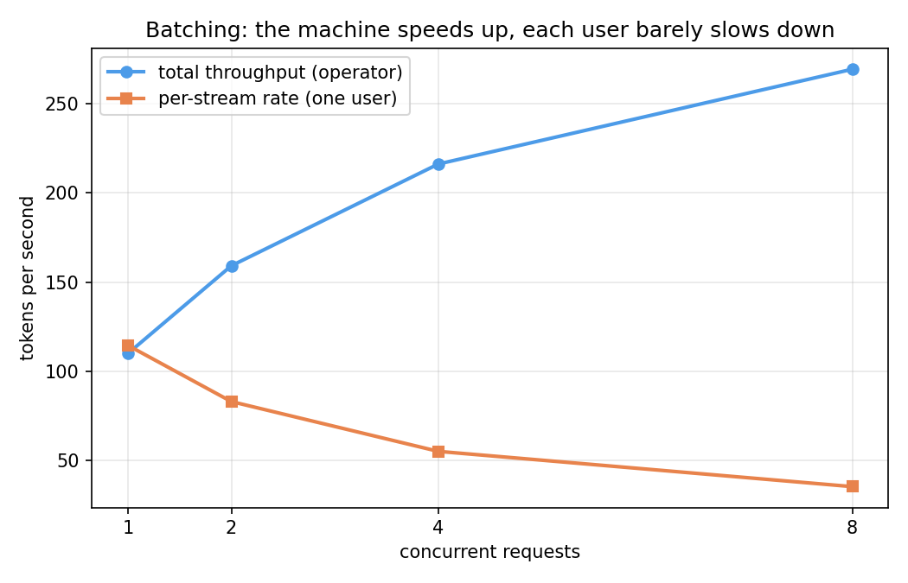

<!-- .slide: id="title" class="section-divider" data-state="is-section-divider" --> # LLMs 0 to 100 Module 10: LLM Deployment What does it take to put a model behind an API, and what does a token cost? --- <!-- .slide: id="review-pieces" --> ## Review: The Pieces This Module Serves Weights are frozen from here. The problem: run them fast, for many users, at low cost. <div class="card-grid cols-3"> <div class="card"><h4>Module 4 · Architecture</h4><p>Generation is the forward pass <strong>in a loop</strong>: predict a token, append it, run again. Attention needs every earlier key and value.</p></div> <div class="card"><h4>Module 5 · Training at scale</h4><p>Training: mixed precision, batches, fleets of GPUs. Inference is a <strong>different workload</strong> with a different bottleneck.</p></div> <div class="card"><h4>Module 9 · Evaluation</h4><p>Quality is one axis. <strong>Cost</strong> is the other: latency, memory, throughput. Two points better and four times slower can still lose.</p></div> </div> --- <!-- .slide: id="review-question" --> ## Review: The Question This Module Answers **What does it take to put a good checkpoint behind an API, and what does each token cost?** <div class="slide-columns" style="grid-template-columns: repeat(2, 1fr); gap: 34px;"> <div> **What carries over** - The transformer forward pass and where the parameters live (Module 4) - The KV idea from attention: position t needs every earlier key and value (Module 3) - Sampling parameters: temperature, top-p (Module 4) - The chat template that wraps every request (Module 6) </div> <div> **What is new** - Why the bottleneck is **memory bandwidth**, not compute - The **KV cache** and the memory a conversation occupies - **Batching**: the economics of the entire API business - **Quantization**, speculative decoding, and MoE at serving time - The serving stack: vLLM and the OpenAI-compatible API </div> </div> --- <!-- .slide: id="divider-serving" class="section-divider" data-state="is-section-divider" --> # The Serving Problem Many users, shared hardware, a meter that never stops --- <!-- .slide: id="serving-metrics" --> ## Four Numbers Define the Problem Serving: many users, one API, and a hardware bill that runs whether or not anyone calls. <div class="card-grid cols-4"> <div class="card"><h4>Time to first token</h4><p><strong>TTFT.</strong> Wait before text appears.</p></div> <div class="card"><h4>Per-user rate</h4><p><strong>Tokens/sec, one stream.</strong> How fast the reply flows.</p></div> <div class="card"><h4>Throughput</h4><p><strong>Tokens/sec, whole machine.</strong> All users combined.</p></div> <div class="card"><h4>Cost per token</h4><p><strong>Hardware $/hour ÷ throughput.</strong> Every API price comes from this division.</p></div> </div> The first two belong to the user. The last two belong to whoever pays for the GPU. <!-- .element: class="text-lg" style="margin-top: 10px;" --> --- <!-- .slide: id="serving-tension" --> ## The Central Tension: Latency vs Throughput <div class="slide-columns" style="grid-template-columns: repeat(2, 1fr); gap: 34px;"> <div> **Make one user fast** - Whole machine for one request - Fastest reply, idle GPU - Enormous cost per token </div> <div> **Make the machine productive** - Pack requests together - Far more tokens per second - Each reply slightly slower </div> </div> Every technique in this lecture is a position in this trade. Ask of each: **who gets faster, and who pays?** <!-- .element: class="text-lg" style="margin-top: 14px;" --> <div class="note"> Streaming: the model makes tokens one at a time anyway, so send each as it is made. Decent TTFT plus a tolerable stream rate feels fast even when the full reply takes ten seconds. </div> --- <!-- .slide: id="divider-hbm" class="section-divider" data-state="is-section-divider" --> # What One Token Costs Why the bottleneck is memory, not math --- <!-- .slide: id="hbm-phases" --> ## Generation Has Two Phases That Behave Nothing Alike <div style="display: flex; justify-content: center; margin: 10px 0;"> <svg viewBox="0 0 1000 330" style="max-width: 960px; width: 100%;" font-family="inherit"> <text x="235" y="28" fill="#4c9be8" font-size="21" font-weight="700" text-anchor="middle">Prefill: the prompt goes in</text> <g font-size="15" fill="#e6edf3" text-anchor="middle"> <rect x="60" y="60" width="66" height="34" rx="6" fill="none" stroke="#8b98b8"/><text x="93" y="82">Explain</text> <rect x="134" y="60" width="66" height="34" rx="6" fill="none" stroke="#8b98b8"/><text x="167" y="82">why</text> <rect x="208" y="60" width="66" height="34" rx="6" fill="none" stroke="#8b98b8"/><text x="241" y="82">GPUs</text> <rect x="282" y="60" width="66" height="34" rx="6" fill="none" stroke="#8b98b8"/><text x="315" y="82">are</text> <rect x="356" y="60" width="66" height="34" rx="6" fill="none" stroke="#8b98b8"/><text x="389" y="82">fast</text> </g> <g stroke="#4c9be8" stroke-width="2" marker-end="none"> <line x1="93" y1="98" x2="205" y2="150"/><line x1="167" y1="98" x2="220" y2="150"/><line x1="241" y1="98" x2="241" y2="150"/><line x1="315" y1="98" x2="262" y2="150"/><line x1="389" y1="98" x2="277" y2="150"/> </g> <rect x="130" y="152" width="220" height="52" rx="8" fill="rgba(76,155,232,0.15)" stroke="#4c9be8" stroke-width="2"/> <text x="240" y="184" fill="#e6edf3" font-size="17" text-anchor="middle">model, one pass</text> <text x="240" y="245" fill="#4c9be8" font-size="16" text-anchor="middle" font-weight="700">all tokens together</text> <text x="240" y="272" fill="#8b98b8" font-size="15" text-anchor="middle">one burst of arithmetic</text> <line x1="500" y1="45" x2="500" y2="290" stroke="#2a3450" stroke-width="2"/> <text x="755" y="28" fill="#e8a34c" font-size="21" font-weight="700" text-anchor="middle">Decode: the reply comes out</text> <g font-size="15" fill="#e6edf3" text-anchor="middle"> <rect x="565" y="152" width="200" height="52" rx="8" fill="rgba(232,163,76,0.12)" stroke="#e8a34c" stroke-width="2"/> <text x="665" y="184" font-size="17">model, full pass</text> <rect x="835" y="60" width="90" height="34" rx="6" fill="none" stroke="#8b98b8"/><text x="880" y="82">next token</text> </g> <path d="M 700 150 C 730 100, 800 78, 830 77" fill="none" stroke="#e8a34c" stroke-width="2"/> <path d="M 880 98 C 880 150, 800 190, 770 195" fill="none" stroke="#e8a34c" stroke-width="2" stroke-dasharray="6 5"/> <text x="912" y="140" fill="#8b98b8" font-size="14" text-anchor="middle">append,</text> <text x="912" y="158" fill="#8b98b8" font-size="14" text-anchor="middle">repeat</text> <text x="745" y="245" fill="#e8a34c" font-size="16" text-anchor="middle" font-weight="700">one token per pass</text> <text x="745" y="272" fill="#8b98b8" font-size="15" text-anchor="middle">a long trickle of tiny passes</text> </svg> </div> Each phase hits a different physical limit. Every serving trick targets one of them. <!-- .element: class="text-lg" --> --- <!-- .slide: id="hbm-napkin" --> ## The Napkin Math for One Decoded Token One decoded token: about 2 floating point operations per parameter, and **every parameter read from GPU memory**. <div class="metric-box"> $$\text{7B model in fp16:}\quad 14\ \text{GB read from memory}\ \longrightarrow\ 14\ \text{GFLOPs of work}$$ <p>Roughly <strong>one arithmetic operation per byte moved</strong>.</p> </div> The hardware is built the other way around: <!-- .element: class="text-lg" --> <div class="bench-table"> <table> <thead><tr><th>NVIDIA H100 SXM</th><th>Peak</th></tr></thead> <tbody> <tr><td>fp16 compute</td><td class="num">~1,000 TFLOP/s</td></tr> <tr><td>HBM memory bandwidth</td><td class="num">3.35 TB/s</td></tr> <tr><td><strong>Compute available per byte moved</strong></td><td class="num"><strong>~300 operations</strong></td></tr> </tbody> </table> </div> Decode uses one operation per byte. The other 299 sit idle while the memory system streams weights. <!-- .element: class="text-lg" --> --- <!-- .slide: id="hbm-speed-limit" --> ## The Decode Speed Limit During decode, HBM bandwidth sets the speed limit: <div class="metric-box"> $$\text{tokens/sec} \approx \frac{\text{memory bandwidth}}{\text{bytes of weights read per token}}$$ <p>A 14 GB model on a 3.35 TB/s card tops out near <strong>240 tokens/sec for one user</strong>, no matter how much compute the card has.</p> </div> <div class="fragment note"> - Predicts real single-user speeds well (you test it in the exercise) - Only two levers: **more bandwidth**, or **fewer bytes per token** - The second half of this lecture pulls the second lever </div> --- <!-- .slide: id="hbm-intensity" --> ## Arithmetic Intensity **Arithmetic intensity** = operations per byte moved. <div style="display: flex; justify-content: center; margin: 6px 0;"> <svg viewBox="0 0 940 360" style="max-width: 880px; width: 100%;" font-family="inherit"> <line x1="80" y1="300" x2="900" y2="300" stroke="#8b98b8" stroke-width="2"/> <line x1="80" y1="300" x2="80" y2="40" stroke="#8b98b8" stroke-width="2"/> <text x="490" y="340" fill="#8b98b8" font-size="16" text-anchor="middle">arithmetic intensity (operations per byte)</text> <text x="46" y="170" fill="#8b98b8" font-size="16" text-anchor="middle" transform="rotate(-90 46 170)">achievable speed</text> <line x1="80" y1="290" x2="500" y2="80" stroke="#e8a34c" stroke-width="4"/> <line x1="500" y1="80" x2="890" y2="80" stroke="#4c9be8" stroke-width="4"/> <line x1="500" y1="80" x2="500" y2="300" stroke="#2a3450" stroke-width="2" stroke-dasharray="6 6"/> <text x="500" y="322" fill="#8b98b8" font-size="15" text-anchor="middle">~300 (H100)</text> <text x="235" y="120" fill="#e8a34c" font-size="18" font-weight="700" text-anchor="middle">memory bound</text> <text x="235" y="144" fill="#8b98b8" font-size="15" text-anchor="middle">bandwidth sets the ceiling</text> <text x="700" y="130" fill="#4c9be8" font-size="18" font-weight="700" text-anchor="middle">compute bound</text> <text x="700" y="154" fill="#8b98b8" font-size="15" text-anchor="middle">arithmetic sets the ceiling</text> <circle cx="92" cy="285" r="9" fill="#e06c75"/> <text x="150" y="266" fill="#e06c75" font-size="17" font-weight="700">decode (~1 op/byte)</text> <text x="150" y="288" fill="#8b98b8" font-size="15">limits tokens per second</text> <circle cx="700" cy="80" r="9" fill="#50c878"/> <text x="700" y="45" fill="#50c878" font-size="17" font-weight="700" text-anchor="middle">prefill (thousands of ops/byte)</text> <text x="700" y="66" fill="#8b98b8" font-size="15" text-anchor="middle">limits time to first token</text> </svg> </div> <div class="fragment note hint-box"> Batching helps decode: users in the same batch share one read of the weights, so the same bandwidth serves more tokens. </div> --- <div class="figure-card">  <div class="figure-info"> ## Tri Dao <!-- .element: class="fragment fade-in" --> <div class="fragment fade-in"> ### FlashAttention (2022) Made attention IO-aware. The standard implementation spent its time **writing the attention matrix to HBM and reading it back**, not doing math. FlashAttention computes the same result in tiles that stay in fast on-chip memory. Long contexts became practical. This section's thesis, applied to one kernel: the expensive resource is **bytes moved**, not operations. Count traffic first. </div> </div> </div> --- <!-- .slide: id="hbm-side-quest-laptop" --> ## Side Quest: Predict Your Own Laptop Memory bandwidth is a published spec, so the formula predicts the machine in front of you: <div class="bench-table"> <table> <thead><tr><th>Machine</th><th>Bandwidth</th><th>7B at 4-bit (~3.5 GB)</th><th>Predicted</th></tr></thead> <tbody> <tr><td>MacBook Air (M2)</td><td class="num">100 GB/s</td><td class="num">100 / 3.5</td><td class="num">~29 tok/s</td></tr> <tr><td>MacBook Pro (M4 Max)</td><td class="num">546 GB/s</td><td class="num">546 / 3.5</td><td class="num">~156 tok/s</td></tr> <tr><td>RTX 4090</td><td class="num">1,008 GB/s</td><td class="num">1,008 / 3.5</td><td class="num">~288 tok/s</td></tr> </tbody> </table> </div> Measured llama.cpp decode rates land near these predictions. The exercise runs this measurement. <!-- .element: class="text-lg" --> --- <!-- .slide: id="hbm-bandwidth-wall" --> ## The Bandwidth Wall Growth since the V100 (2017), to scale. Compute keeps pulling away from bandwidth: decode's imbalance **widens every generation**: <div class="hbar-chart"> <div class="hbar-row"> <div class="hbar-label">V100 (2017)</div> <div class="hbar-track"><div class="hbar compute" style="width: 5.6%;"></div><div class="hbar-value" style="left: 5.6%;">1x · 125 TFLOP/s</div></div> <div class="hbar-track"><div class="hbar memory" style="width: 5.6%;"></div><div class="hbar-value" style="left: 5.6%;">1x · 0.9 TB/s</div></div> </div> <div class="hbar-row"> <div class="hbar-label">A100 (2020)</div> <div class="hbar-track"><div class="hbar compute" style="width: 13.9%;"></div><div class="hbar-value" style="left: 13.9%;">2.5x · 312 TFLOP/s</div></div> <div class="hbar-track"><div class="hbar memory" style="width: 12.4%;"></div><div class="hbar-value" style="left: 12.4%;">2.2x · 2.0 TB/s</div></div> </div> <div class="hbar-row"> <div class="hbar-label">H100 (2022)</div> <div class="hbar-track"><div class="hbar compute" style="width: 44%;"></div><div class="hbar-value" style="left: 44%;">7.9x · ~1,000 TFLOP/s</div></div> <div class="hbar-track"><div class="hbar memory" style="width: 20.7%;"></div><div class="hbar-value" style="left: 20.7%;">3.7x · 3.35 TB/s</div></div> </div> <div class="hbar-row"> <div class="hbar-label">B200 (2024)</div> <div class="hbar-track"><div class="hbar compute" style="width: 100%;"></div><div class="hbar-value" style="right: 2%; padding-left: 0; color: #0b1020; font-weight: 700;">18x · ~2,250 TFLOP/s</div></div> <div class="hbar-track"><div class="hbar memory" style="width: 49.4%;"></div><div class="hbar-value" style="left: 49.4%;">8.9x · 8.0 TB/s</div></div> </div> <div class="hbar-legend"> <span><span class="hbar-swatch" style="background: var(--primary-color);"></span>fp16 compute (dense)</span> <span><span class="hbar-swatch" style="background: var(--viz-orange);"></span>HBM bandwidth</span> </div> </div> --- <!-- .slide: id="divider-kvcache" class="section-divider" data-state="is-section-divider" --> # The KV Cache The memory a conversation takes up --- <!-- .slide: id="kvcache-what" --> ## Attention Remembers So You Don't Recompute Attention at position t needs the **keys and values of every earlier position** (Module 3). Recomputing them every step is quadratic waste. The server keeps them: the **KV cache**. <div style="display: flex; justify-content: center; margin: 4px 0;"> <svg viewBox="0 0 940 250" style="max-width: 880px; width: 100%;" font-family="inherit"> <g font-size="15" fill="#e6edf3" text-anchor="middle"> <rect x="60" y="30" width="90" height="32" rx="6" fill="none" stroke="#8b98b8"/><text x="105" y="51">The</text> <rect x="160" y="30" width="90" height="32" rx="6" fill="none" stroke="#8b98b8"/><text x="205" y="51">sky</text> <rect x="260" y="30" width="90" height="32" rx="6" fill="none" stroke="#8b98b8"/><text x="305" y="51">is</text> <rect x="360" y="30" width="90" height="32" rx="6" fill="none" stroke="#e8a34c" stroke-width="2"/><text x="405" y="51" fill="#e8a34c">blue</text> </g> <g font-size="13" text-anchor="middle"> <rect x="72" y="86" width="66" height="26" rx="4" fill="rgba(76,155,232,0.2)" stroke="#4c9be8"/><text x="105" y="104" fill="#e6edf3">K, V</text> <rect x="72" y="118" width="66" height="26" rx="4" fill="rgba(76,155,232,0.2)" stroke="#4c9be8"/><text x="105" y="136" fill="#e6edf3">K, V</text> <rect x="72" y="150" width="66" height="26" rx="4" fill="rgba(76,155,232,0.2)" stroke="#4c9be8"/><text x="105" y="168" fill="#e6edf3">K, V</text> <rect x="172" y="86" width="66" height="26" rx="4" fill="rgba(76,155,232,0.2)" stroke="#4c9be8"/><text x="205" y="104" fill="#e6edf3">K, V</text> <rect x="172" y="118" width="66" height="26" rx="4" fill="rgba(76,155,232,0.2)" stroke="#4c9be8"/><text x="205" y="136" fill="#e6edf3">K, V</text> <rect x="172" y="150" width="66" height="26" rx="4" fill="rgba(76,155,232,0.2)" stroke="#4c9be8"/><text x="205" y="168" fill="#e6edf3">K, V</text> <rect x="272" y="86" width="66" height="26" rx="4" fill="rgba(76,155,232,0.2)" stroke="#4c9be8"/><text x="305" y="104" fill="#e6edf3">K, V</text> <rect x="272" y="118" width="66" height="26" rx="4" fill="rgba(76,155,232,0.2)" stroke="#4c9be8"/><text x="305" y="136" fill="#e6edf3">K, V</text> <rect x="272" y="150" width="66" height="26" rx="4" fill="rgba(76,155,232,0.2)" stroke="#4c9be8"/><text x="305" y="168" fill="#e6edf3">K, V</text> <rect x="372" y="86" width="66" height="26" rx="4" fill="rgba(232,163,76,0.2)" stroke="#e8a34c"/><text x="405" y="104" fill="#e6edf3">K, V</text> <rect x="372" y="118" width="66" height="26" rx="4" fill="rgba(232,163,76,0.2)" stroke="#e8a34c"/><text x="405" y="136" fill="#e6edf3">K, V</text> <rect x="372" y="150" width="66" height="26" rx="4" fill="rgba(232,163,76,0.2)" stroke="#e8a34c"/><text x="405" y="168" fill="#e6edf3">K, V</text> </g> <text x="42" y="104" fill="#8b98b8" font-size="13" text-anchor="end">layer 1</text> <text x="42" y="136" fill="#8b98b8" font-size="13" text-anchor="end">layer 2</text> <text x="42" y="168" fill="#8b98b8" font-size="13" text-anchor="end">layer N</text> <text x="250" y="205" fill="#4c9be8" font-size="15" text-anchor="middle">kept from earlier steps, read every step</text> <text x="405" y="228" fill="#e8a34c" font-size="15" text-anchor="middle">the new token appends one column</text> <g fill="#e6edf3" font-size="16"> <text x="530" y="100">Each token of context adds one</text> <text x="530" y="126">K and one V vector <tspan fill="#4c9be8">per layer</tspan>,</text> <text x="530" y="152"><tspan fill="#4c9be8">per KV head</tspan>. The cache never</text> <text x="530" y="178">shrinks while the request lives.</text> </g> </svg> </div> <div class="metric-box"> $$\text{bytes per token} = 2 \cdot n_{\text{layers}} \cdot n_{\text{kv-heads}} \cdot d_{\text{head}} \cdot \text{bytes per value}$$ <p>The 2 is one key and one value.</p> </div> --- <!-- .slide: id="kvcache-cost" --> ## Work It Out for a 7B-Class Model 32 layers, 32 heads of dimension 128, fp16. That is 2 × 32 × 32 × 128 × 2 bytes, about **0.5 MB per token of context**. <div class="card-grid cols-3"> <div class="card"><h4>One user, 4K context</h4><p>4,096 tokens × 0.5 MB = <strong>about 2 GB</strong> of GPU memory, for one conversation.</p></div> <div class="card warn"><h4>Eight such users</h4><p><strong>16 GB of cache</strong>: more memory than the entire 14 GB model. The cache, not compute, decides how many users fit.</p></div> <div class="card"><h4>And it is traffic too</h4><p>Every decode step <strong>reads the whole cache</strong> on top of the weights, so long conversations also decode slower.</p></div> </div> This is why long contexts cost more: expensive in memory and bandwidth even when the arithmetic is cheap. <!-- .element: class="text-lg" style="margin-top: 10px;" --> --- <section id="kv-budget"> <h2>Fit It on the Card</h2> <div class="interactive-host" data-widget="kvBudget"></div> </section> --- <!-- .slide: id="kvcache-architecture" --> ## Architecture Fights Back: MQA and GQA The cache scales with the number of **KV heads**, so shrink that number. <div class="slide-columns" style="grid-template-columns: repeat(2, 1fr); gap: 34px;"> <div> **Multi-query attention (2019)** - All query heads share **one** K/V set - Cache divided by 32 in our example - Shazeer, years ahead of the field </div> <div> **Grouped-query attention (2023)** - The compromise that won: a few KV heads (Llama 3 8B uses 8) - Most of the saving, almost none of the quality loss - Module 4's modern block </div> </div> Serving costs reached back and **changed model architecture**. Watch for this again with MoE. <!-- .element: class="text-lg" style="margin-top: 12px;" --> --- <div class="figure-card">  <div class="figure-info"> ## Woosuk Kwon <!-- .element: class="fragment fade-in" --> <div class="fragment fade-in"> ### vLLM and PagedAttention (2023), with Zhuohan Li and the Berkeley team Serving engines gave each request one **contiguous slab** of cache memory, sized for the maximum context. Measured waste: 60-80% of cache memory sat empty. The fix imported a fifty-year-old operating systems idea: manage the cache in small **pages** with a lookup table, like virtual memory. Near-zero waste, far more concurrent users per card. vLLM became the open-source default; you run it in the exercise. </div> </div> </div> --- <!-- .slide: id="kvcache-prefix" --> ## Prefix Caching: The Part Users Actually Meet Requests that share a prefix (system prompt, long document, the conversation so far) can **share the cache** for those tokens. Only the new suffix needs prefill. <div class="card-grid cols-2"> <div class="card good"><h4>Why providers sell "prompt caching"</h4><p>Prefill for a stable prefix is computed once, then billed at a discount. The KV cache, productized.</p></div> <div class="card"><h4>The design rule</h4><p><strong>Stable content first</strong> (system prompt, tools, examples), variable content last. Module 11 builds on this.</p></div> </div> --- <!-- .slide: id="divider-batching" class="section-divider" data-state="is-section-divider" --> # Batching Serving many users, and the economics of the API business --- <!-- .slide: id="batching-insight" --> ## Cashing In the Escape Hatch <div style="display: flex; justify-content: center; margin: 8px 0;"> <svg viewBox="0 0 960 330" style="max-width: 920px; width: 100%;" font-family="inherit"> <rect x="40" y="90" width="150" height="110" rx="10" fill="rgba(139,152,184,0.12)" stroke="#8b98b8" stroke-width="2"/> <text x="115" y="135" fill="#e6edf3" font-size="17" text-anchor="middle">weights</text> <text x="115" y="160" fill="#8b98b8" font-size="14" text-anchor="middle">14 GB in HBM</text> <line x1="190" y1="145" x2="280" y2="145" stroke="#e06c75" stroke-width="3"/> <rect x="285" y="128" width="110" height="34" rx="6" fill="none" stroke="#e06c75" stroke-width="2"/> <text x="340" y="150" fill="#e06c75" font-size="15" text-anchor="middle">1 token</text> <text x="218" y="240" fill="#e6edf3" font-size="16" text-anchor="middle">batch of 1: one read,</text> <text x="218" y="263" fill="#e06c75" font-size="16" font-weight="700" text-anchor="middle">one token</text> <line x1="480" y1="40" x2="480" y2="290" stroke="#2a3450" stroke-width="2"/> <rect x="530" y="90" width="150" height="110" rx="10" fill="rgba(139,152,184,0.12)" stroke="#8b98b8" stroke-width="2"/> <text x="605" y="135" fill="#e6edf3" font-size="17" text-anchor="middle">weights</text> <text x="605" y="160" fill="#8b98b8" font-size="14" text-anchor="middle">same 14 GB</text> <g stroke="#50c878" stroke-width="2.5"> <line x1="680" y1="120" x2="760" y2="62"/><line x1="680" y1="132" x2="760" y2="103"/><line x1="680" y1="145" x2="760" y2="145"/><line x1="680" y1="158" x2="760" y2="187"/><line x1="680" y1="170" x2="760" y2="228"/> </g> <g font-size="14" fill="#50c878" text-anchor="middle"> <rect x="765" y="46" width="120" height="30" rx="6" fill="none" stroke="#50c878" stroke-width="2"/><text x="825" y="66">user 1's token</text> <rect x="765" y="88" width="120" height="30" rx="6" fill="none" stroke="#50c878" stroke-width="2"/><text x="825" y="108">user 2's token</text> <rect x="765" y="130" width="120" height="30" rx="6" fill="none" stroke="#50c878" stroke-width="2"/><text x="825" y="150">user 3's token</text> <text x="825" y="192">⋮</text> <rect x="765" y="212" width="120" height="30" rx="6" fill="none" stroke="#50c878" stroke-width="2"/><text x="825" y="232">user 32's token</text> </g> <text x="710" y="285" fill="#e6edf3" font-size="16" text-anchor="middle">batch of 32: one read, <tspan fill="#50c878" font-weight="700">32 tokens</tspan></text> </svg> </div> Throughput scales almost linearly with batch size until compute binds or KV caches fill memory. A full batch divides cost per token by **10x or more**. <!-- .element: class="text-lg" --> --- <!-- .slide: id="batching-continuous" --> ## Static Batching Fails; Continuous Batching Won Replies finish at wildly different lengths, and that kills the convoy. Continuous batching (Orca, 2022) reschedules **every decode step**: <div style="display: flex; justify-content: center; margin: 6px 0;"> <svg viewBox="0 0 960 350" style="max-width: 920px; width: 100%;" font-family="inherit"> <text x="230" y="26" fill="#e06c75" font-size="19" font-weight="700" text-anchor="middle">static: batch as convoy</text> <g font-size="13" fill="#8b98b8" text-anchor="end"> <text x="66" y="66">slot 1</text><text x="66" y="106">slot 2</text><text x="66" y="146">slot 3</text> </g> <rect x="78" y="48" width="330" height="26" rx="5" fill="rgba(76,155,232,0.5)"/> <rect x="78" y="88" width="90" height="26" rx="5" fill="rgba(76,155,232,0.5)"/> <rect x="170" y="88" width="238" height="26" rx="5" fill="rgba(224,108,117,0.25)" stroke="#e06c75" stroke-dasharray="5 4"/> <text x="289" y="106" fill="#e06c75" font-size="13" text-anchor="middle">idle: waits for slot 1</text> <rect x="78" y="128" width="180" height="26" rx="5" fill="rgba(76,155,232,0.5)"/> <rect x="260" y="128" width="148" height="26" rx="5" fill="rgba(224,108,117,0.25)" stroke="#e06c75" stroke-dasharray="5 4"/> <text x="334" y="146" fill="#e06c75" font-size="13" text-anchor="middle">idle</text> <rect x="78" y="168" width="330" height="26" rx="5" fill="rgba(139,152,184,0.18)" stroke="#8b98b8" stroke-dasharray="5 4"/> <text x="243" y="186" fill="#8b98b8" font-size="13" text-anchor="middle">new arrivals wait for the whole convoy</text> <text x="243" y="230" fill="#8b98b8" font-size="14" text-anchor="middle">everyone returns when the essay finishes</text> <line x1="480" y1="20" x2="480" y2="250" stroke="#2a3450" stroke-width="2"/> <text x="730" y="26" fill="#50c878" font-size="19" font-weight="700" text-anchor="middle">continuous: rolling population</text> <g font-size="13" fill="#8b98b8" text-anchor="end"> <text x="566" y="66">slot 1</text><text x="566" y="106">slot 2</text><text x="566" y="146">slot 3</text> </g> <rect x="578" y="48" width="330" height="26" rx="5" fill="rgba(76,155,232,0.5)"/> <rect x="578" y="88" width="90" height="26" rx="5" fill="rgba(76,155,232,0.5)"/> <rect x="672" y="88" width="236" height="26" rx="5" fill="rgba(80,200,120,0.45)"/> <text x="790" y="106" fill="#0b1020" font-size="13" font-weight="700" text-anchor="middle">next request enters mid-flight</text> <rect x="578" y="128" width="180" height="26" rx="5" fill="rgba(76,155,232,0.5)"/> <rect x="762" y="128" width="146" height="26" rx="5" fill="rgba(80,200,120,0.45)"/> <text x="835" y="146" fill="#0b1020" font-size="13" font-weight="700" text-anchor="middle">another one</text> <text x="743" y="230" fill="#8b98b8" font-size="14" text-anchor="middle">finished requests leave, waiting ones enter, every step</text> <text x="480" y="290" fill="#e6edf3" font-size="16" text-anchor="middle">time → blue = a request decoding red = wasted slot green = reclaimed slot</text> </svg> </div> <div class="fragment note"> Remaining interference: a newcomer's prefill is a compute burst that stalls everyone's decode. Schedulers chunk prefills and interleave the pieces. Unchunked, you feel it as jittery streaming. </div> --- <!-- .slide: id="batching-goodput" --> ## What the Operator Actually Tunes - The knobs: batch size and cache memory, against a latency promise - More concurrency: more throughput, slower streams - Somewhere there is a line the user experience must not cross **Goodput** is the honest metric: throughput that still meets the latency target. Raw throughput can always be inflated by making everyone wait. <!-- .element: class="text-lg" --> --- <!-- .slide: id="batching-side-quest-cost" --> ## Side Quest: What Does a Token Actually Cost? Work backward from a rented H100 at about $3/hour and a realistic batched throughput for an 8B model: <div class="bench-table"> <table> <thead><tr><th>Quantity</th><th>Value</th></tr></thead> <tbody> <tr><td>Batched throughput (continuous batching, dozens of streams)</td><td class="num">~5,000 tok/s</td></tr> <tr><td>Tokens per hour</td><td class="num">~18M</td></tr> <tr><td><strong>Hardware cost per million output tokens</strong></td><td class="num"><strong>~$0.17</strong></td></tr> <tr><td>Same card, one user at a time (~150 tok/s)</td><td class="num">~$5.50 per million</td></tr> </tbody> </table> </div> The 30x gap between those last two rows is batching. It is also roughly the gap between a public API's price and what a naive self-hoster pays. <!-- .element: class="text-lg" --> --- <!-- .slide: id="divider-quant" class="section-divider" data-state="is-section-divider" --> # Making Tokens Cheaper Quantization, distillation, and speculative decoding --- <!-- .slide: id="quant-side-quest-home" --> ## Side Quest: Can You Run It at Home? What fewer bytes buys. Weight memory at three precisions, against real machines: <div class="bench-table dense"> <table> <thead><tr><th>Model</th><th>fp16</th><th>int8</th><th>int4</th><th>Fits where at int4?</th></tr></thead> <tbody> <tr><td>Qwen2.5-0.5B</td><td class="num">1.0 GB</td><td class="num">0.5 GB</td><td class="num">0.2 GB</td><td>A phone</td></tr> <tr><td>Llama-3-8B</td><td class="num">16.1 GB</td><td class="num">8.0 GB</td><td class="num">4.0 GB</td><td>Any recent laptop</td></tr> <tr><td>Llama-3-70B</td><td class="num">141.2 GB</td><td class="num">70.6 GB</td><td class="num">35.3 GB</td><td>A 64 GB workstation</td></tr> </tbody> </table> </div> Each column halves the bytes, which halves the memory **and** doubles the decode speed limit. The whole local-LLM world lives in the right-hand columns. <!-- .element: class="text-lg" --> --- <!-- .slide: id="quant-how" --> ## Quantization: Fewer Bits per Weight Inference weights tolerate 8-bit and even 4-bit integers, with one scale factor per small group preserving the range: <div class="metric-box"> $$w \approx s \cdot q, \qquad q \in \lbrace -8, \dots, 7 \rbrace\ \text{for 4-bit}$$ <p>Store small integers; keep one fp16 scale <strong>s</strong> per group of ~32 weights; multiply back at compute time.</p> </div> <div style="display: flex; justify-content: center; margin: 8px 0;"> <svg viewBox="0 0 960 170" style="max-width: 920px; width: 100%;" font-family="inherit"> <text x="130" y="46" fill="#8b98b8" font-size="15" text-anchor="end">fp16</text> <g> <rect x="150" y="26" width="176" height="32" rx="4" fill="rgba(139,152,184,0.25)" stroke="#8b98b8"/> <rect x="330" y="26" width="176" height="32" rx="4" fill="rgba(139,152,184,0.25)" stroke="#8b98b8"/> <rect x="510" y="26" width="176" height="32" rx="4" fill="rgba(139,152,184,0.25)" stroke="#8b98b8"/> </g> <text x="418" y="47" fill="#e6edf3" font-size="14" text-anchor="middle">16 bits per weight</text> <text x="740" y="47" fill="#8b98b8" font-size="15">14 GB for 7B</text> <text x="130" y="120" fill="#8b98b8" font-size="15" text-anchor="end">int4</text> <g> <rect x="150" y="100" width="44" height="32" rx="4" fill="rgba(80,200,120,0.3)" stroke="#50c878"/> <rect x="196" y="100" width="44" height="32" rx="4" fill="rgba(80,200,120,0.3)" stroke="#50c878"/> <rect x="242" y="100" width="44" height="32" rx="4" fill="rgba(80,200,120,0.3)" stroke="#50c878"/> <rect x="288" y="100" width="44" height="32" rx="4" fill="rgba(80,200,120,0.3)" stroke="#50c878"/> <rect x="334" y="100" width="30" height="32" rx="4" fill="rgba(76,155,232,0.35)" stroke="#4c9be8"/> </g> <text x="242" y="152" fill="#50c878" font-size="13" text-anchor="middle">4 bits each</text> <text x="360" y="152" fill="#4c9be8" font-size="13" text-anchor="start">shared scale s</text> <text x="420" y="121" fill="#50c878" font-size="15">3.5 GB for 7B: 4x less traffic, 4x the speed limit, fits on a laptop</text> </svg> </div> --- <section id="quant-explorer"> <h2>Rounding Weights onto a Grid</h2> <div class="interactive-host" data-widget="quantExplorer"></div> </section> --- <!-- .slide: id="quant-catch" --> ## The Catch, and the Module 9 Connection Quantization is a quality trade, and the loss is **uneven**: small on average, occasionally large on a specific capability. <div class="card-grid cols-2"> <div class="card warn"><h4>Do not trust the average</h4><p>A tiny perplexity delta can hide a real regression on, say, math or a low-resource language. Aggregates hide exactly what you need to know; Module 9's oldest lesson.</p></div> <div class="card good"><h4>The honest procedure</h4><p><strong>Re-run the evaluation suite on the quantized model.</strong> Ship it like a new model, because it is one.</p></div> </div> Names on download pages: <!-- .element: class="text-lg" style="margin-top: 10px;" --> - **GPTQ**, **AWQ**: weight-only quantization, computed after training - **GGUF**: llama.cpp's file family - **fp8**: the emerging served-model default; frontier labs increasingly train at low precision from the start <div class="note"> Distillation is the other shrink: train a small model on a large model's outputs (Module 6 machinery). It cuts parameter count, not bytes per parameter. Most small production models are distilled from larger siblings. </div> --- <div class="figure-card">  <div class="figure-info"> ## Georgi Gerganov <!-- .element: class="fragment fade-in" --> <div class="fragment fade-in"> ### llama.cpp (2023) Wrote a plain C/C++ inference engine, essentially alone, that ran Llama on a MacBook days after the weights leaked. Aggressive quantization plus careful CPU code proved serious models do not need a datacenter. The GGUF ecosystem around it (Ollama descends from it) put local inference in everyone's hands. One engineer, zero GPUs. In the exercise, his server is the fallback when you have no NVIDIA card. </div> </div> </div> --- <!-- .slide: id="quant-speculative" --> ## Speculative Decoding: Spend Prefill to Save Decode A small **draft model** guesses ahead; the large model **verifies all k guesses in one prefill-shaped pass**: <div style="display: flex; justify-content: center; margin: 6px 0;"> <svg viewBox="0 0 960 300" style="max-width: 920px; width: 100%;" font-family="inherit"> <text x="120" y="60" fill="#e8a34c" font-size="16" font-weight="700" text-anchor="end">draft model</text> <text x="120" y="82" fill="#8b98b8" font-size="13" text-anchor="end">cheap, fast</text> <g font-size="15" text-anchor="middle"> <rect x="150" y="42" width="110" height="34" rx="6" fill="rgba(232,163,76,0.15)" stroke="#e8a34c"/><text x="205" y="64" fill="#e6edf3">The</text> <rect x="268" y="42" width="110" height="34" rx="6" fill="rgba(232,163,76,0.15)" stroke="#e8a34c"/><text x="323" y="64" fill="#e6edf3">sky</text> <rect x="386" y="42" width="110" height="34" rx="6" fill="rgba(232,163,76,0.15)" stroke="#e8a34c"/><text x="441" y="64" fill="#e6edf3">is</text> <rect x="504" y="42" width="110" height="34" rx="6" fill="rgba(232,163,76,0.15)" stroke="#e8a34c"/><text x="559" y="64" fill="#e6edf3">green</text> </g> <text x="700" y="64" fill="#8b98b8" font-size="14">k = 4 drafted tokens</text> <g stroke="#4c9be8" stroke-width="2"> <line x1="205" y1="80" x2="205" y2="130"/><line x1="323" y1="80" x2="323" y2="130"/><line x1="441" y1="80" x2="441" y2="130"/><line x1="559" y1="80" x2="559" y2="130"/> </g> <rect x="150" y="132" width="464" height="44" rx="8" fill="rgba(76,155,232,0.15)" stroke="#4c9be8" stroke-width="2"/> <text x="382" y="160" fill="#e6edf3" font-size="16" text-anchor="middle">large model: one parallel pass checks all four</text> <g font-size="20" text-anchor="middle"> <text x="205" y="215" fill="#50c878">✓</text><text x="323" y="215" fill="#50c878">✓</text><text x="441" y="215" fill="#50c878">✓</text><text x="559" y="215" fill="#e06c75">✗</text> </g> <text x="323" y="248" fill="#50c878" font-size="15" text-anchor="middle">3 tokens accepted for ~1 token's traffic</text> <text x="660" y="215" fill="#e06c75" font-size="15">replaced by the large</text> <text x="660" y="235" fill="#e06c75" font-size="15">model's own token ("blue")</text> </svg> </div> - Accept/reject rule leaves the output distribution **provably unchanged** - Typical speedup: **2-3x** on predictable stretches - Nothing changes what the model knows, only **bytes moved per token** --- <!-- .slide: id="divider-moe" class="section-divider" data-state="is-section-divider" --> # Mixture of Experts at Serving Time Why frontier models are almost all MoE --- <!-- .slide: id="moe-accounting" --> ## The Accounting, with Mixtral as the Worked Example Module 4's MoE: many expert FFNs, a router picking a few per token. The serving numbers are why it took over. <div class="bench-table"> <table> <thead><tr><th>Mixtral 8x7B</th><th>Count</th><th>What scales with it</th></tr></thead> <tbody> <tr><td>Total parameters</td><td class="num">47B</td><td>Quality (roughly), and <strong>memory footprint</strong></td></tr> <tr><td>Active per token</td><td class="num">~13B</td><td><strong>Compute and weight traffic per token</strong></td></tr> </tbody> </table> </div> The router buys a big model's knowledge at a fraction of the per-token cost. <!-- .element: class="text-lg" --> <div class="fragment note hint-box"> The fine print: all 47B must be resident, because which experts a token wants is not known until its router runs. MoE trades cheap tokens for an expensive footprint. </div> --- <!-- .slide: id="moe-hybrid" --> ## The Footprint Shapes the Hardware: Hybrid GPU/CPU Only a few experts fire per token, so the expert weights do not all need to live in expensive HBM: <div style="display: flex; justify-content: center; margin: 6px 0;"> <svg viewBox="0 0 960 320" style="max-width: 920px; width: 100%;" font-family="inherit"> <rect x="40" y="40" width="360" height="240" rx="12" fill="rgba(76,155,232,0.07)" stroke="#4c9be8" stroke-width="2"/> <text x="220" y="70" fill="#4c9be8" font-size="18" font-weight="700" text-anchor="middle">GPU HBM: fast, small, expensive</text> <g font-size="14" fill="#e6edf3" text-anchor="middle"> <rect x="70" y="95" width="300" height="34" rx="6" fill="rgba(76,155,232,0.2)" stroke="#4c9be8"/><text x="220" y="117">attention + shared layers</text> <rect x="70" y="140" width="300" height="34" rx="6" fill="rgba(76,155,232,0.2)" stroke="#4c9be8"/><text x="220" y="162">router</text> <rect x="70" y="192" width="140" height="52" rx="6" fill="rgba(80,200,120,0.25)" stroke="#50c878"/><text x="140" y="215">expert 3</text><text x="140" y="234" fill="#50c878" font-size="12">firing now</text> <rect x="230" y="192" width="140" height="52" rx="6" fill="rgba(80,200,120,0.25)" stroke="#50c878"/><text x="300" y="215">expert 17</text><text x="300" y="234" fill="#50c878" font-size="12">firing now</text> </g> <g stroke="#e8a34c" stroke-width="3"> <line x1="410" y1="150" x2="530" y2="150"/> </g> <text x="470" y="132" fill="#e8a34c" font-size="14" text-anchor="middle">PCIe: slow</text> <text x="470" y="176" fill="#8b98b8" font-size="13" text-anchor="middle">experts pulled</text> <text x="470" y="194" fill="#8b98b8" font-size="13" text-anchor="middle">on demand</text> <rect x="540" y="40" width="380" height="240" rx="12" fill="rgba(232,163,76,0.06)" stroke="#e8a34c" stroke-width="2"/> <text x="730" y="70" fill="#e8a34c" font-size="18" font-weight="700" text-anchor="middle">CPU RAM: slow, big, cheap</text> <g font-size="13" fill="#e6edf3" text-anchor="middle"> <rect x="565" y="95" width="105" height="38" rx="6" fill="rgba(139,152,184,0.15)" stroke="#8b98b8"/><text x="617" y="119">expert 1</text> <rect x="680" y="95" width="105" height="38" rx="6" fill="rgba(139,152,184,0.15)" stroke="#8b98b8"/><text x="732" y="119">expert 2</text> <rect x="795" y="95" width="105" height="38" rx="6" fill="rgba(139,152,184,0.15)" stroke="#8b98b8"/><text x="847" y="119">expert 4</text> <rect x="565" y="143" width="105" height="38" rx="6" fill="rgba(139,152,184,0.15)" stroke="#8b98b8"/><text x="617" y="167">expert 5</text> <rect x="680" y="143" width="105" height="38" rx="6" fill="rgba(139,152,184,0.15)" stroke="#8b98b8"/><text x="732" y="167">…</text> <rect x="795" y="143" width="105" height="38" rx="6" fill="rgba(139,152,184,0.15)" stroke="#8b98b8"/><text x="847" y="167">expert 64</text> </g> <text x="730" y="220" fill="#8b98b8" font-size="14" text-anchor="middle">the long tail: resident but mostly idle</text> <text x="480" y="310" fill="#e6edf3" font-size="16" text-anchor="middle">a large cost saving for a modest speed loss: why huge open MoE models run on workstations</text> </svg> </div> At datacenter scale the logic reverses: shard experts across GPUs (**expert parallelism**). A popular expert becomes a queue, so routers are load-balanced at training time. <!-- .element: class="text-lg" --> --- <!-- .slide: id="moe-deepseek" --> ## The State of the Art Compounds These Ideas DeepSeek-V3 (2024): **hundreds of fine-grained experts**, a handful active per token, plus **multi-head latent attention**, which compresses the KV cache into a small latent vector. <div class="card-grid cols-2"> <div class="card"><h4>Why you have heard of it</h4><p>Frontier-class quality at unusually low training and serving cost. Not one invention: serving ideas <strong>compounding</strong>.</p></div> <div class="card"><h4>The summary</h4><p>Dense models spend HBM <strong>bandwidth</strong> on every parameter, every token. MoE spends HBM <strong>capacity</strong> on parameters it mostly does not touch. Which wins depends on your bottleneck.</p></div> </div> --- <!-- .slide: id="divider-stack" class="section-divider" data-state="is-section-divider" --> # The Serving Stack Engines, the API, and the build-or-buy decision --- <!-- .slide: id="stack-engines" --> ## Nobody Writes This From Scratch <div class="bench-table"> <table> <thead><tr><th>Engine</th><th>What it is</th><th>When you meet it</th></tr></thead> <tbody> <tr><td><strong>vLLM</strong></td><td>PagedAttention + continuous batching</td><td>The open-source default for GPU serving; this module's exercise</td></tr> <tr><td><strong>SGLang</strong></td><td>Same problem, emphasis on structured output and prefix reuse</td><td>Agentic and constrained-generation workloads</td></tr> <tr><td><strong>TensorRT-LLM</strong></td><td>NVIDIA's compiled kernels</td><td>Squeezing the last 2x out of NVIDIA hardware</td></tr> <tr><td><strong>llama.cpp / Ollama</strong></td><td>Quantized GGUF inference, CPU included</td><td>Local machines, the exercise's laptop fallback</td></tr> </tbody> </table> </div> All expose the same thing: an HTTP server speaking the **OpenAI-compatible chat completions API**, the de facto wire protocol. <!-- .element: class="text-lg" --> --- <!-- .slide: id="stack-api" --> ## The API Request Is the Course in Miniature ```json { "model": "Qwen2.5-0.5B-Instruct", "messages": [{"role": "user", "content": "Explain HBM in one sentence."}], "temperature": 0.7, "max_tokens": 120, "stream": true } ``` <div class="bench-table dense"> <table> <thead><tr><th>Field</th><th>Where you learned it</th></tr></thead> <tbody> <tr><td><code>messages</code></td><td>The chat template, applied server-side (Module 6). The client never sees tokens, only text</td></tr> <tr><td><code>temperature</code></td><td>Sampling (Module 4)</td></tr> <tr><td><code>max_tokens</code></td><td>A cap on the decode loop (this module)</td></tr> <tr><td><code>stream</code></td><td>Send each token as it is made; tokens arrive as server-sent events</td></tr> <tr><td><code>usage</code> in the reply</td><td>Prompt and completion token counts: <strong>the billing meter</strong></td></tr> </tbody> </table> </div> --- <!-- .slide: id="stack-buy-or-build" --> ## Rent the API, or Run Your Own? The crossover is a spreadsheet. You know every row in it. <div class="slide-columns" style="grid-template-columns: repeat(2, 1fr); gap: 34px;"> <div> **Rent when** - Load is small or spiky (you pay only for tokens) - You need frontier-class models - Undifferentiated ops work is not your job </div> <div> **Self-host when** - Token volume is high and steady; at scale the crossover comes fast - Data cannot leave, or latency must be controlled - The model is your own finetune (Module 6) </div> </div> --- <!-- .slide: id="stack-hygiene" --> ## Production Hygiene, and the Next Class - Run the **Module 9 regression suite** before swapping any model or quantization into production; a quantized model ships like a new model - **Canary** a new model on a slice of traffic before it takes all of it - **Log per-request latency and token counts**: they are the cost model and the debugging record in one The model is now a URL: tokens in, tokens out, at a price per token. Everything in Module 11 (prompting, retrieval, tools, agents) is engineering built on top of that URL. <!-- .element: class="text-lg" style="margin-top: 14px;" --> --- <!-- .slide: id="divider-exercise" class="section-divider" data-state="is-section-divider" --> # Exercise Serve a model with vLLM, then write an API client to it --- <!-- .slide: id="exercise-run" --> ## Running the Exercise Start a server first. Any OpenAI-compatible server works; the client cannot tell the difference. That is the lesson: <!-- .element: class="text-lg" --> ```bash vllm serve Qwen/Qwen2.5-0.5B-Instruct # Linux + NVIDIA GPU OLLAMA_NUM_PARALLEL=8 ollama serve # macOS/Windows; then: ollama pull qwen2.5:0.5b-instruct llama-server -m qwen2.5-0.5b-instruct-q4_k_m.gguf # any machine, quantized GGUF ``` Then fill in the eight `NotImplementedError` lines in `module_10_deployment/exercise.py` and run after each one; unfinished steps are skipped automatically: <!-- .element: class="text-lg" --> ```bash cd exercises uv run python module_10_deployment/src/main.py ``` The runner probes ports 8000 (vLLM), 11434 (Ollama), and 8080 (llama.cpp) and uses the first server it finds. Steps 1-3 are pure arithmetic and run with no server at all. <!-- .element: class="text-lg" style="margin-top: 10px;" --> --- <!-- .slide: id="exercise-overview" --> ## Exercise: The Lecture, Measured <div class="slide-columns" style="grid-template-columns: repeat(2, 1fr); gap: 30px;"> <div> **You write** - The napkin math: weight memory, KV cache growth, the speed limit - The client: request body, reply extraction, stream parser, stopwatch, throughput - Each blank is one line or one short expression </div> <div> **The payoff** - Stage 4 fires 1, 2, 4, and 8 concurrent requests at your server - Total throughput printed next to per-stream speed - The machine speeds up while each stream barely pays: batching, measured on your own laptop </div> </div> --- <!-- .slide: id="exercise-step1" --> ## Step 1: model_weight_bytes() ```python def model_weight_bytes(n_params: int, bits_per_weight: int) -> float: """How many bytes of memory a model's weights occupy.""" # TODO: Return the total bytes: parameters times bits per weight, in bytes. raise NotImplementedError("TODO: compute the weight memory in bytes") ``` <div class="fragment hint-box"> **Hint:** there are 8 bits in a byte, so divide the total bits by 8. </div> <div class="fragment note"> **Answer:** ```python return n_params * bits_per_weight / 8 ``` </div> --- <!-- .slide: id="exercise-step2" --> ## Step 2: kv_cache_bytes_per_token() ```python def kv_cache_bytes_per_token( n_layers: int, n_kv_heads: int, head_dim: int, bytes_per_value: int ) -> float: """How many bytes the KV cache grows for every token in the context.""" # TODO: Return the bytes per token: keys and values, for every layer, for # every KV head, head_dim numbers each. raise NotImplementedError("TODO: compute the KV cache bytes per token") ``` <div class="fragment hint-box"> **Hint:** multiply all four arguments together, then double it (one key AND one value). </div> <div class="fragment note"> **Answer:** ```python return 2 * n_layers * n_kv_heads * head_dim * bytes_per_value ``` </div> --- <!-- .slide: id="exercise-step3" --> ## Step 3: decode_tokens_per_second() ```python def decode_tokens_per_second( bandwidth_bytes_per_s: float, bytes_per_token: float ) -> float: """The lecture's speed-limit formula for single-user decoding.""" # TODO: Return the speed limit in tokens per second. raise NotImplementedError("TODO: compute the decode speed limit") ``` <div class="fragment hint-box"> **Hint:** it is one division. Bandwidth on top. </div> <div class="fragment note"> **Answer:** ```python return bandwidth_bytes_per_s / bytes_per_token ``` </div> --- <section id="exercise-output-1"> <h2>After Step 3: The Hardware Tables</h2> <div class="content" style="justify-content: center;"> <div class="terminal-output dense"> <div class="terminal-bar"> <span class="terminal-dot red"></span> <span class="terminal-dot yellow"></span> <span class="terminal-dot green"></span> <span class="terminal-title">uv run python module_10_deployment/src/main.py</span> </div> <div class="terminal-body"> <pre class="terminal-pre"><span class="header">Stage 1: napkin math (no server needed)</span> Weight memory by precision (GB): model fp16 int8 int4 Qwen2.5-0.5B 1.0 0.5 0.2 Llama-3-8B 16.1 8.0 4.0 Llama-3-70B 141.2 70.6 35.3 KV cache at fp16 (per token, and for one 8,192-token user): model KB/token GB @ 8K Qwen2.5-0.5B 12.3 0.10 Llama-3-8B 131.1 1.07 Llama-3-70B 327.7 2.68 Decode speed limit for Llama-3-8B, tokens/sec (bandwidth / bytes): machine GB/s fp16 int4 NVIDIA H100 SXM 3350 209 834 NVIDIA RTX 4090 1008 63 251 Apple M4 Max 546 34 136 MacBook Air (M2) 100 (n/a) 25 server found: http://localhost:11434/v1 (model: qwen2.5:0.5b-instruct) <span class="skipped">Stage 2: one chat completion request [skipped: implement build_chat_request, extract_reply]</span> <span class="skipped">Stages 3-4: streaming and the benchmark [skipped: steps 6-8]</span></pre> </div> </div> <p class="text-lg terminal-caption">Actual output, no server needed: what fits where, how the cache grows, each machine's ceiling.</p> </div> </section> --- <!-- .slide: id="exercise-step4" --> ## Step 4: build_chat_request() ```python def build_chat_request( model: str, prompt: str, temperature: float, max_tokens: int ) -> dict: """Build the JSON body for an OpenAI-compatible chat completion request.""" body = { "model": model, "temperature": temperature, "max_tokens": max_tokens, # TODO: Set body["messages"] below to a list containing one message: # a dictionary with role "user" and the prompt as its content. } raise NotImplementedError("TODO: add the messages list to the request body") ``` <div class="fragment hint-box"> **Hint:** the OpenAI format is `[{"role": ..., "content": ...}]`. </div> <div class="fragment note"> **Answer:** ```python body["messages"] = [{"role": "user", "content": prompt}] return body ``` </div> --- <!-- .slide: id="exercise-step5" --> ## Step 5: extract_reply() ```python def extract_reply(response: dict) -> str: """Pull the generated text out of a (non-streaming) chat completion response.""" # TODO: Return the content of the message inside the first choice. raise NotImplementedError("TODO: extract the reply text from the response") ``` <div class="fragment hint-box"> **Hint:** `response["choices"]` is a list; take element 0, then its `"message"`, then that message's `"content"`. </div> <div class="fragment note"> **Answer:** ```python return response["choices"][0]["message"]["content"] ``` </div> --- <section id="exercise-output-2"> <h2>After Step 5: The First Real Request</h2> <div class="content" style="justify-content: center;"> <div class="terminal-output"> <div class="terminal-bar"> <span class="terminal-dot red"></span> <span class="terminal-dot yellow"></span> <span class="terminal-dot green"></span> <span class="terminal-title">uv run python module_10_deployment/src/main.py</span> </div> <div class="terminal-body"> <pre class="terminal-pre"><span class="header">Stage 2: one chat completion request</span> POST http://localhost:11434/v1/chat/completions prompt: Explain in two sentences why GPUs are faster than CPUs for matrix math. reply: GPGPU (General-purpose GPU Computing) is designed to accelerate matrix computations involving large-scale linear algebra tasks using NVIDIA's GPUs. This makes it superior compared to traditional CPU-based algorithms, as these machines offer an edge due to their optimized hardware acceleration capabilities for specific applications like numerical linear algebra. [...] usage: 18 prompt tokens in, 83 completion tokens out (this is the billing meter) <span class="skipped">Stage 3: streaming [skipped: implement parse_stream_line, latency_stats]</span> <span class="skipped">Stage 4: concurrency benchmark [skipped: implement total_throughput]</span></pre> </div> </div> <p class="text-lg terminal-caption">Actual output, appended to the tables above. A small local model answering over the same wire protocol the frontier labs sell. The usage line is the billing meter from the lecture.</p> </div> </section> --- <!-- .slide: id="exercise-step6" --> ## Step 6: parse_stream_line() ```python def parse_stream_line(line: str) -> str | None: """Turn one line of a streaming response into its piece of text, or None.""" if not line.startswith("data: "): return None # keep-alives and blank lines payload = line[len("data: "):].strip() if payload == "[DONE]": return None # end-of-stream marker, no text chunk = json.loads(payload) # TODO: Return the content string of the delta inside the first choice # (and None if the delta has no "content" key). raise NotImplementedError("TODO: extract the token text from the chunk") ``` <div class="fragment hint-box"> **Hint:** `chunk["choices"][0]["delta"]` is a dict; `.get("content")` returns None on its own when the key is missing. </div> <div class="fragment note"> **Answer:** ```python return chunk["choices"][0]["delta"].get("content") ``` </div> --- <!-- .slide: id="exercise-step7" --> ## Step 7: latency_stats() ```python def latency_stats(start_time: float, token_times: list[float]) -> dict: """Compute TTFT and the decode rate from per-token arrival timestamps.""" ttft = token_times[0] - start_time # TODO: Set tokens_per_second to the number of tokens generated after the # first one, divided by the time those tokens took to arrive. raise NotImplementedError("TODO: compute the decode rate in tokens per second") ``` <div class="fragment hint-box"> **Hint:** `len(token_times) - 1` tokens arrived between `token_times[0]` and `token_times[-1]`. </div> <div class="fragment note"> **Answer:** ```python tokens_per_second = (len(token_times) - 1) / (token_times[-1] - token_times[0]) return {"ttft": ttft, "tokens_per_second": tokens_per_second} ``` </div> --- <section id="exercise-output-3"> <h2>After Step 7: The Two Phases, Timed</h2> <div class="content" style="justify-content: center;"> <div class="terminal-output"> <div class="terminal-bar"> <span class="terminal-dot red"></span> <span class="terminal-dot yellow"></span> <span class="terminal-dot green"></span> <span class="terminal-title">uv run python module_10_deployment/src/main.py</span> </div> <div class="terminal-body"> <pre class="terminal-pre"><span class="header">Stage 3: streaming, with the stopwatch running</span> streaming reply: GPGs have higher processing power and memory capacity, which allows them to handle and multiply large matrices more efficiently compared to CPUs that use traditional double-precision arithmetic with limited instruction-size units (ISAs). GPUs are also equipped with optimized hardware architectures optimized for matrix operations, leading to faster computation speeds. time to first token : 28 ms (prefill) decode rate : 112.6 tokens/sec (decode) compare the decode rate with your stage 1 speed-limit prediction <span class="skipped">Stage 4: concurrency benchmark [skipped: implement total_throughput]</span></pre> </div> </div> <p class="text-lg terminal-caption">Actual output. The two numbers are the lecture's two phases: TTFT is prefill, the decode rate is the bandwidth-bound loop. Put the decode rate next to your stage 1 prediction for this machine.</p> </div> </section> --- <!-- .slide: id="exercise-step8" --> ## Step 8: total_throughput() ```python def total_throughput(token_counts: list[int], wall_seconds: float) -> float: """The operator's metric: tokens per second across the whole machine.""" # TODO: Return the total number of generated tokens divided by the wall time. raise NotImplementedError("TODO: compute the combined tokens per second") ``` <div class="fragment hint-box"> **Hint:** `sum()` the counts. </div> <div class="fragment note"> **Answer:** ```python return sum(token_counts) / wall_seconds ``` </div> --- <section id="exercise-output-4"> <h2>After Step 8: Batching, Live</h2> <div class="content" style="justify-content: center;"> <div class="terminal-output"> <div class="terminal-bar"> <span class="terminal-dot red"></span> <span class="terminal-dot yellow"></span> <span class="terminal-dot green"></span> <span class="terminal-title">uv run python module_10_deployment/src/main.py</span> </div> <div class="terminal-body"> <pre class="terminal-pre"><span class="header">Stage 4: concurrency benchmark (batching, live)</span> 120 token budget per request; 80 in the benchmark concurrent total tok/s per-stream tok/s wall (s) 1 110.0 114.6 0.7 2 <span class="success">159.2</span> 83.1 1.0 4 <span class="success">216.2</span> 55.2 1.5 8 <span class="success">269.3</span> 35.4 2.3 saved figure: module_10_deployment/output/throughput.png the same hardware now produces 2.4x the tokens per second. each stream slows, but far less than a queue would cost it: one weight read now feeds every request in the batch</pre> </div> </div> <p class="text-lg terminal-caption">Actual output on a MacBook running Ollama with OLLAMA_NUM_PARALLEL=8. Eight users cost each stream a 3x slowdown, not the 8x a queue would charge, and the machine produces 2.4x the tokens per second.</p> </div> </section> --- <!-- .slide: id="exercise-figure" --> ## The Curve the Whole Module Is About <div class="img-figure"> <p></p> </div> The blue line is what the operator sells. The orange line is what one user feels. The gap between them, divided by the hardware bill, is the price of a token. **Which point on the x-axis would you run your service at?** <!-- .element: class="text-lg" --> --- <!-- .slide: id="divider-quiz" class="section-divider" data-state="is-section-divider" --> # Quiz --- <!-- .slide: id="quiz-idle-gpu" --> ## The Idle Supercomputer <div class="quiz-prompt"> A GPU has roughly 300 times more compute per second than bytes of memory bandwidth per second, yet it sits mostly idle while generating text for one user. Reconcile those two facts. </div> <div class="fragment note quiz-answer"> **Short answer: decode has an arithmetic intensity of about one operation per byte, so the memory system is saturated while 299 of every 300 arithmetic slots go unused.** - Each decoded token: every weight read from HBM, but only ~2 operations per parameter - The workload sits far below the hardware's compute-to-bandwidth ratio - The memory bus is full; the arithmetic units the spec sheet advertises sit idle </div> --- <!-- .slide: id="quiz-two-phases" --> ## Same Weights, Different Bottleneck <div class="quiz-prompt"> Prefill and decode run the same weights through the same layers. Why is one compute bound and the other memory bound? </div> <div class="fragment note quiz-answer"> **Short answer: prefill amortizes each weight read over the whole prompt; decode reads all the weights to produce one token.** - Prefill: all prompt tokens in one parallel pass, so each weight read does a thousand tokens' worth of arithmetic. Compute bound. - Decode: sequential, so each read serves exactly one token. Intensity near one, memory bound. - Same weights; different number of tokens sharing each byte. </div> --- <!-- .slide: id="quiz-slow-start" --> ## Slow to Start, Fast Once Going <div class="quiz-prompt"> A user complains the chatbot takes ages before text appears but streams quickly once it starts. Which phase is slow, and what property of their prompts would explain it? </div> <div class="fragment note quiz-answer"> **Short answer: prefill is slow, and long prompts explain it.** - TTFT is prefill: the whole prompt runs through the model before the first output token exists - Prefill cost grows with prompt length; pasted documents produce exactly this signature - Decode rate depends on bandwidth and model size, not prompt length, so the stream feels fine - Server-side fix for repeated long prefixes: prefix caching </div> --- <!-- .slide: id="quiz-kv-gqa" --> ## The Cache and the Heads <div class="quiz-prompt"> Estimate the KV cache per token for a model with 32 layers, 8 KV heads of dimension 128, in fp16. Why does grouped-query attention change this number a lot but barely change the parameter count? </div> <div class="fragment note quiz-answer"> **Short answer: 2 × 32 × 8 × 128 × 2 bytes = 128 KB per token, about 1 GB for an 8K context. GQA divides the cache by the head reduction, but K/V projection weights are a small slice of total parameters.** - The cache scales directly with KV head count: 32 heads to 8 cuts it 4x - Parameters barely move: K/V projections are a small slice of a model dominated by FFN weights - GQA shrinks what is stored per token, not what the model knows </div> --- <!-- .slide: id="quiz-free-lunch" --> ## Where Batching's Free Lunch Comes From <div class="quiz-prompt"> Batching 32 users onto one GPU raises decode throughput nearly 32x. Where does that come from, and when does it stop? </div> <div class="fragment note quiz-answer"> **Short answer: the weights were being read anyway; a batch makes one read produce 32 tokens instead of one. It stops when the workload becomes compute bound or the KV caches exhaust memory.** - Single-user decode wastes almost all the compute the memory traffic could feed - Batching shares each weight read across every sequence: higher arithmetic intensity, near-free tokens - Two walls: arithmetic becomes the limit, or 32 conversations' KV caches no longer fit next to the weights </div> --- <!-- .slide: id="quiz-continuous" --> ## Why Static Batching Died <div class="quiz-prompt"> What property of LLM requests, absent from most other web workloads, made static batching so wasteful that every serving engine replaced it within about a year? </div> <div class="fragment note quiz-answer"> **Short answer: wildly variable and unpredictable output lengths.** - A web request does bounded work; a generation runs anywhere from three tokens to three thousand - Static batch: everyone waits for the longest reply while finished slots idle - Continuous batching reschedules at every decode step, the workload's natural granularity </div> --- <!-- .slide: id="quiz-quant" --> ## 4-bit Quantization <div class="quiz-prompt"> Quantizing from fp16 to 4-bit roughly quadruples decode speed. Which formula predicts this, and what must you do before shipping the quantized model? </div> <div class="fragment note quiz-answer"> **Short answer: the speed limit, bandwidth over bytes per token: one quarter the bytes means four times the ceiling. Before shipping, re-run the full Module 9 evaluation suite on the quantized model.** - The speedup is pure arithmetic - The asterisk is quality: loss is uneven, small on average, sometimes concentrated in one capability - Average perplexity can hide a real regression - A quantized model is a different model and ships like one: regression suite, per-task breakdown, canary </div> --- <!-- .slide: id="quiz-speculative" --> ## Verifying Is Cheaper Than Generating <div class="quiz-prompt"> Speculative decoding uses a small model to draft k tokens and the large model to verify them. Why is verifying k tokens so much cheaper than generating them? </div> <div class="fragment note quiz-answer"> **Short answer: verification checks all k drafts in one parallel forward pass, which is prefill-shaped; generating them would take k sequential memory-bound passes.** - Given the drafts as input, the large model scores every position at once: one weight read amortized across all k, exactly like prefill - Generation cannot parallelize that way: token n+1 needs token n - The accept/reject rule preserves the output distribution exactly, so the speedup costs no quality </div> --- <!-- .slide: id="quiz-moe" --> ## Cheaper and Exactly as Expensive <div class="quiz-prompt"> A 47B-parameter MoE activates 13B parameters per token. In what sense is it cheaper than a dense 47B model, and in what sense is it exactly as expensive? </div> <div class="fragment note quiz-answer"> **Short answer: cheaper per token (compute and weight traffic scale with the 13B active), exactly as expensive in memory footprint (all 47B must be resident).** - The router decides per token which experts fire, so every expert must stay reachable - MoE converts a bandwidth problem into a capacity problem - Hence hybrid GPU/CPU layouts (cold experts in cheap RAM), and serving math unlike a dense model of either size </div> --- <!-- .slide: id="quiz-buy-build" --> ## The Self-Hosting Spreadsheet <div class="quiz-prompt"> Your startup serves 50 million tokens a day at a steady rate through a rented API. What numbers would you gather to decide whether to self-host? </div> <div class="fragment note quiz-answer"> **Short answer: your current API bill per month; a candidate model that passes your Module 9 evals; its measured batched throughput on a rentable GPU; that GPU's cost per hour; and the ops cost you'd take on.** - Core comparison, cost per million tokens: GPU $/hour ÷ batched throughput, against the API price - Apply a utilization factor: you pay for peak capacity, the API bills per token - Steady volume favors self-hosting; spiky load, frontier-model needs, and the ops line favor renting </div> --- <!-- .slide: id="end" class="section-divider" data-state="is-section-divider" --> # Questions? Next: Module 11 — Practical Applications --- <!-- .slide: id="resources" --> ## Resources <div class="resources-grid"> <div> <h3>Inference Arithmetic</h3> <ul class="resource-list"> <li>kipply, "Transformer Inference Arithmetic," <a href="https://kipp.ly/transformer-inference-arithmetic/">kipp.ly</a></li> <li>Pope et al., "Efficiently Scaling Transformer Inference," <a href="https://arxiv.org/abs/2211.05102">arXiv:2211.05102</a></li> <li>Dao et al., "FlashAttention: Fast and Memory-Efficient Exact Attention with IO-Awareness," <a href="https://arxiv.org/abs/2205.14135">arXiv:2205.14135</a></li> <li>Williams et al., "Roofline: An Insightful Visual Performance Model," <a href="https://doi.org/10.1145/1498765.1498785">CACM 2009</a></li> </ul> </div> <div> <h3>KV Cache and Serving Engines</h3> <ul class="resource-list"> <li>Shazeer, "Fast Transformer Decoding: One Write-Head is All You Need" (MQA), <a href="https://arxiv.org/abs/1911.02150">arXiv:1911.02150</a></li> <li>Ainslie et al., "GQA: Training Generalized Multi-Query Transformer Models," <a href="https://arxiv.org/abs/2305.13245">arXiv:2305.13245</a></li> <li>Kwon et al., "Efficient Memory Management for LLM Serving with PagedAttention" (vLLM), <a href="https://arxiv.org/abs/2309.06180">arXiv:2309.06180</a></li> <li>Yu et al., "Orca: A Distributed Serving System" (continuous batching), <a href="https://www.usenix.org/conference/osdi22/presentation/yu">OSDI 2022</a></li> <li>vLLM documentation, <a href="https://docs.vllm.ai/">docs.vllm.ai</a></li> </ul> </div> <div> <h3>Quantization, Speculation, MoE</h3> <ul class="resource-list"> <li>Dettmers et al., "LLM.int8()," <a href="https://arxiv.org/abs/2208.07339">arXiv:2208.07339</a></li> <li>Frantar et al., "GPTQ," <a href="https://arxiv.org/abs/2210.17323">arXiv:2210.17323</a> · Lin et al., "AWQ," <a href="https://arxiv.org/abs/2306.00978">arXiv:2306.00978</a></li> <li>Gerganov, llama.cpp and GGUF, <a href="https://github.com/ggml-org/llama.cpp">github.com/ggml-org/llama.cpp</a></li> <li>Leviathan et al., "Fast Inference via Speculative Decoding," <a href="https://arxiv.org/abs/2211.17192">arXiv:2211.17192</a></li> <li>Jiang et al., "Mixtral of Experts," <a href="https://arxiv.org/abs/2401.04088">arXiv:2401.04088</a></li> <li>DeepSeek-AI, "DeepSeek-V3 Technical Report," <a href="https://arxiv.org/abs/2412.19437">arXiv:2412.19437</a></li> </ul> </div> </div>